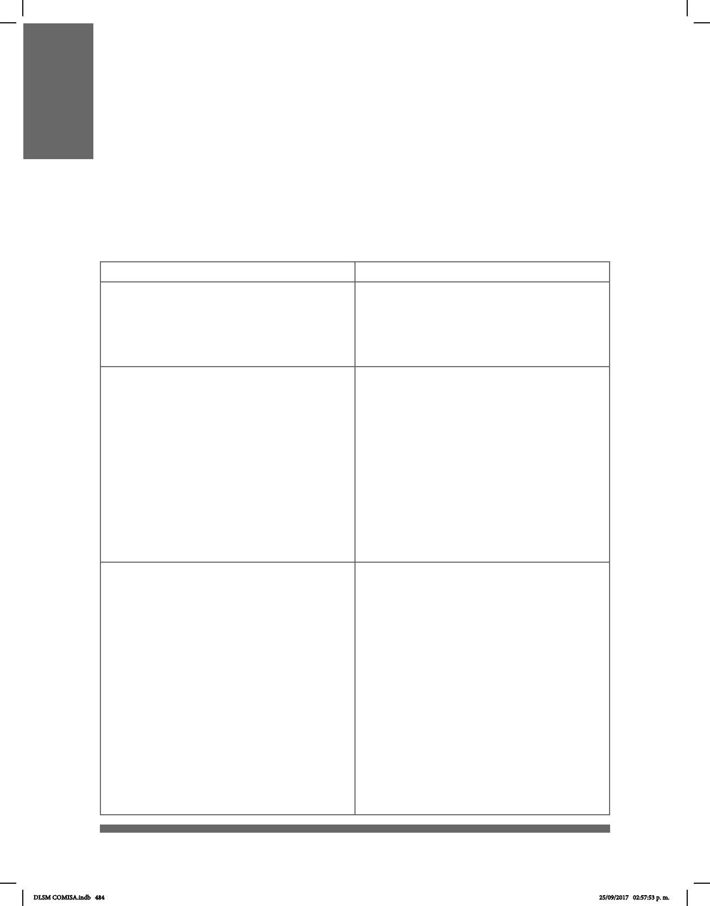

484
Objetivo 4. Acciones prioritarias son, en el
marco de la reforma educativa, la denición de un
modelo para la educación inclusiva de la
mayoría de la población con discapacidad y la
educación especial de quienes lo requieren;
la sensibilización y capacitación a directivos,
maestros, alumnos y padres de familia; la
adecuación de infraestructura educativa; la
dotación de apoyos administrativos, didácticos o
tecnológicos, y la implementación de la Lengua
de Señas Mexicana y el Sistema de Escritura
Braille.
Para el uso de las Tecnologías de la
Información y de las Comunicaciones (TIC) para la
Integración al Desarrollo de las Personas
con Discapacidad, es necesario emprender
mecanismos y políticas generales para
garantizar el acceso pleno a las Personas con
Discapacidad a los sitios de internet del Gobierno
del Distrito Federal, con criterios de
Accesibilidad y las condiciones tecnológicas
adecuadas.
APÉNDICE VI. PROGRAMAS DE POLÍTICA PÚBLICA
PARA LAS PERSONAS CON DISCAPACIDAD
La concreción del marco normativo en un país y en una ciudad a través de la protección
de los derechos de las personas, se institucionaliza en los programas de política pública
con los que los gobiernos cuentan para llevar a cabo sus acciones. En este caso, para el
tema discapacidad tanto a nivel nacional como local (CDMX) se cuenta con programas
con líneas especícas de acción que buscan materializar la agenda de los derechos de
las Personas con Discapacidad a través de los ejercicios de gobierno.
Nacional
Local (CDMX)
Programa Nacional para el Desarrollo
y la Inclusión de las Personas con
Discapacidad 2014-2018
(DOF 30/04/2014)
Programa para la Integración al Desa-
rrollo de las Personas con Discapa-
cidad del Distrito Federal 2014-2018
(PID-PCD) (GODF 24/02/2015)
Estrategia 1.7. Impulsar acciones en las
Entidades Federativas y los Municipios para el
cumplimiento de la Convención y la LGIPD.
Línea de Acción 1.7.7. Implementar en
programas, acciones, atención y difusión, la
Lengua de Señas Mexicana, el Sistema de
Escritura Braille, intérpretes o peritos.
Dominio de la accesibilidad: d. La Información
y las Comunicaciones.Este dominio considera
los sistemas y las tecnologías de la información
y las comunicaciones, así como la señalización
visual, tacto-visual y sonora; la Lengua de Señas
Mexicana (LSM), la visualización de textos, el
Braille, la comunicación táctil, los macrotipos, los
dispositivos multimedia de fácil acceso, así como
el lenguaje escrito, los sistemas auditivos, el
lenguaje sencillo, los medios de voz
digitalizada y otros modos, medios y formatos
aumentativos o alternativos de comunicación,
incluida la tecnología de la información y las
comunicaciones de fácil acceso.
DLSM COMISA.indb 484 25/09/2017 02:57:53 p. m.